Editor
Approved application · approved logoEvery image below is an actual canonical PNG. Open an image for its full resolution. These are authored design scenes, not current-app browser captures.
Table · reorder
table-state-reorderActions and implementation pointers
+ New page · Journal · Explore · All pages · ⌄ · Reflections · › · Reading · Cancel · Done · Ask Journl · Today’s Journal · Close · Instant · Thinking
apps/web/src/components/editor/document-toolbar.tsxpackages/better-editor/src/engine/suggestions.tspackages/better-editor/src/ui/context-menu.tsx

SHA256 1abe6d22c5b25394a13bec6b3542571e77acc99501a3edc41d9b0ebc73df45cd

SHA256 0fe4a852487da883ca8b60318e05cc9d95395382c3b3ab0d18b6fa58f41defeb

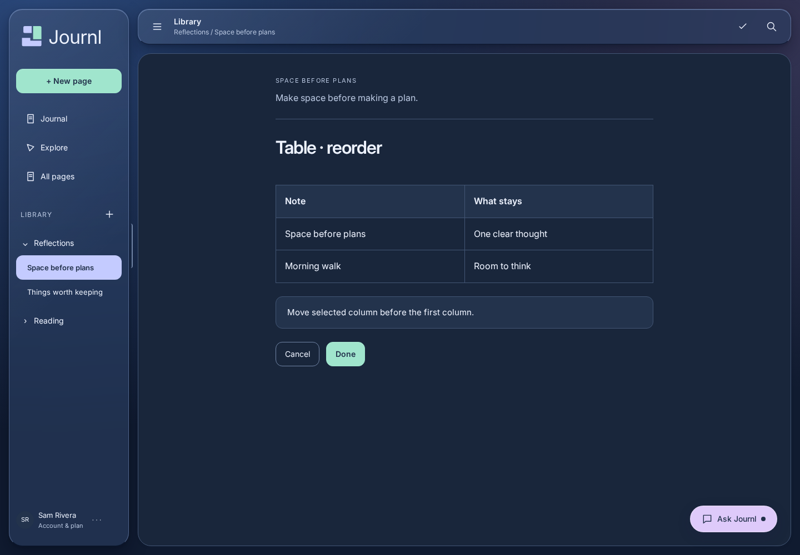
SHA256 a620e0a281ca3d6d23b542686cde7f7b2d8ae455f7e487b7012494ce071c9867

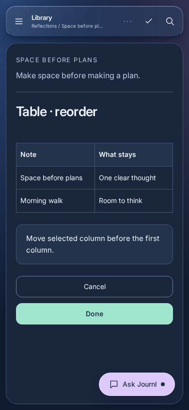
SHA256 3a04f96dc9224544961d71c1ebf761dd8446e7fa4996dc4ce414f5a92304b0b4
Table · cancel
table-state-cancelActions and implementation pointers
+ New page · Journal · Explore · All pages · ⌄ · Reflections · › · Reading · Cancel · Done · Ask Journl · Today’s Journal · Close · Instant · Thinking
apps/web/src/components/editor/document-toolbar.tsxpackages/better-editor/src/engine/suggestions.tspackages/better-editor/src/ui/context-menu.tsx

SHA256 065de4b09446f8c880c551b5e28d111821d8985bdab1793e226b038c250fce4f

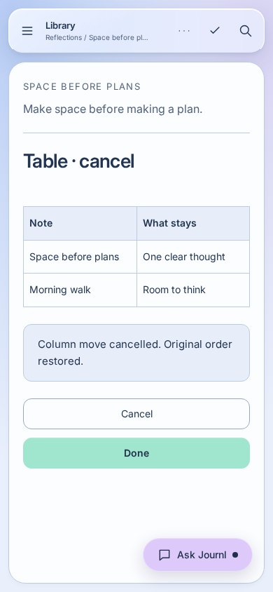
SHA256 af741c6774d3ea8556336dc98425d6afccada56ed356c07c6736bbbdbf8e5628

SHA256 16113b5214a1a4a53bb6009c2c7ee34dd19f4787c8882c3088fb36d0ae95dca8

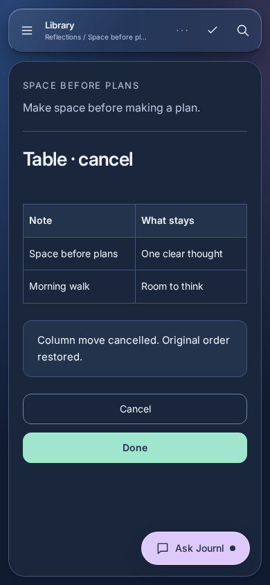
SHA256 1867f48e224c6a34ee2f503b5338c694e104620591dfc6a605f671a57e09a77b
Table · header
table-state-headerActions and implementation pointers
+ New page · Journal · Explore · All pages · ⌄ · Reflections · › · Reading · Cancel · Done · Ask Journl · Today’s Journal · Close · Instant · Thinking
apps/web/src/components/editor/document-toolbar.tsxpackages/better-editor/src/engine/suggestions.tspackages/better-editor/src/ui/context-menu.tsx

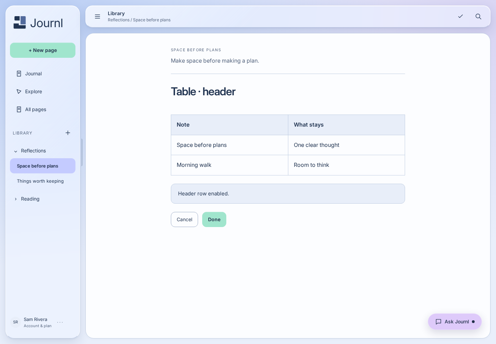
SHA256 db8e181fa3e1a9200dd691c0c49bcb882937e57e77d9cd736e5cf7bb61a24c99

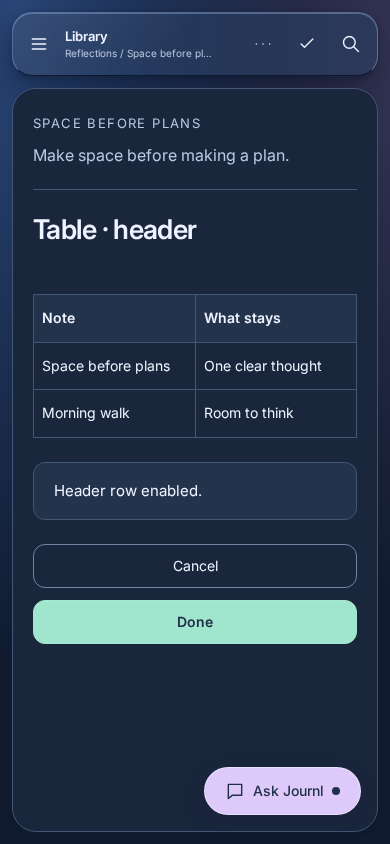
SHA256 e80fff61bba5826cb04daf37b96592f578d685c01dfdce53b795e9fe34c79c9e

SHA256 184ba1345705d6c6b2692f220ef44a8d135b102165d568753f5e696cdc321a2a

SHA256 4273060f1b5d873594775b680b5d83e769fa73869017b9af5bbfe3e913add418
Table · empty
table-state-emptyActions and implementation pointers
+ New page · Journal · Explore · All pages · ⌄ · Reflections · › · Reading · Cancel · Done · Ask Journl · Today’s Journal · Close · Instant · Thinking
apps/web/src/components/editor/document-toolbar.tsxpackages/better-editor/src/engine/suggestions.tspackages/better-editor/src/ui/context-menu.tsx

SHA256 076d5630ceea82cae0764c224297c4b67b5becee72df6b6bc9d7dcd08f586908

SHA256 766c53d042b0bb6ad78653b6ae3b6e1aba4c21101f5ad8956edc39ae895354a1

SHA256 80e01840e92fcbfcbbed201b1c75b8c50a8d36746be6bdb2feba7cc71047723c

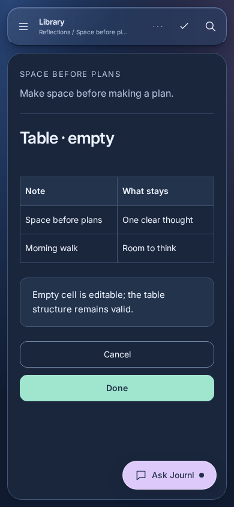
SHA256 156c3416b1cbe5ab699698ad7b7bc501993a64af70123fa5a2d856016c34509a
Table · readonly
table-state-readonlyActions and implementation pointers
+ New page · Journal · Explore · All pages · ⌄ · Reflections · › · Reading · Cancel · Done · Ask Journl · Today’s Journal · Close · Instant · Thinking
apps/web/src/components/editor/document-toolbar.tsxpackages/better-editor/src/engine/suggestions.tspackages/better-editor/src/ui/context-menu.tsx

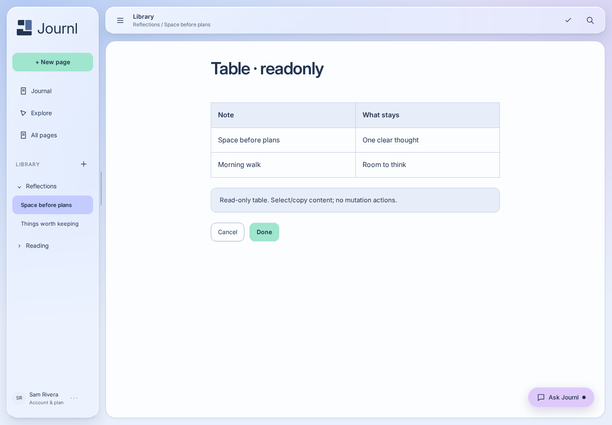
SHA256 c5127e9918e4a748a7a5ab64450170e63fe49d8a85134f33a915c307586ca962

SHA256 68222668b24557fd24bfefc295d4cea04c1384349d23d05c732324fe602fcb48

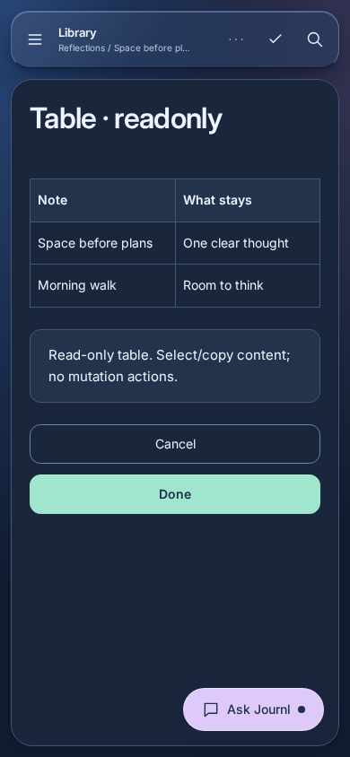
SHA256 2a36c70cd40da413308eb989e1f548f3607dfb5bd59d83e5faba36e7a609cde9

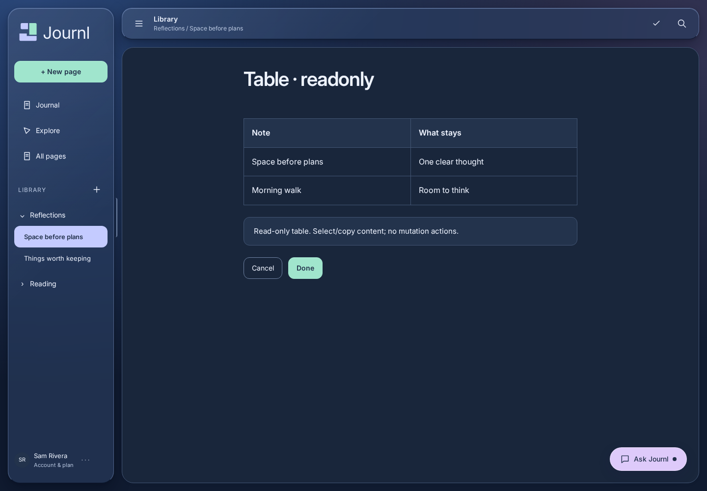
SHA256 0ab03bcfa3f392be650ec2735a3b3ca7cb3db0a2f15586c8ea71c9cd45297f68
Table · delete-confirm
table-state-delete-confirmActions and implementation pointers
× · Cancel · Delete table
apps/web/src/components/editor/document-toolbar.tsxpackages/better-editor/src/engine/suggestions.tspackages/better-editor/src/ui/context-menu.tsx

SHA256 a0b8be1fe7d540c56d2ba455d03035a40079cf5c138e18cbb59c3a5d5a5710d6

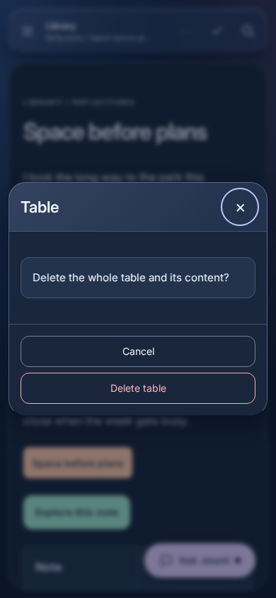
SHA256 15c3b53dedb856248e3884e25fbb9ed3bbe488ae786dd838e2ab4a2a4a0cc8a2

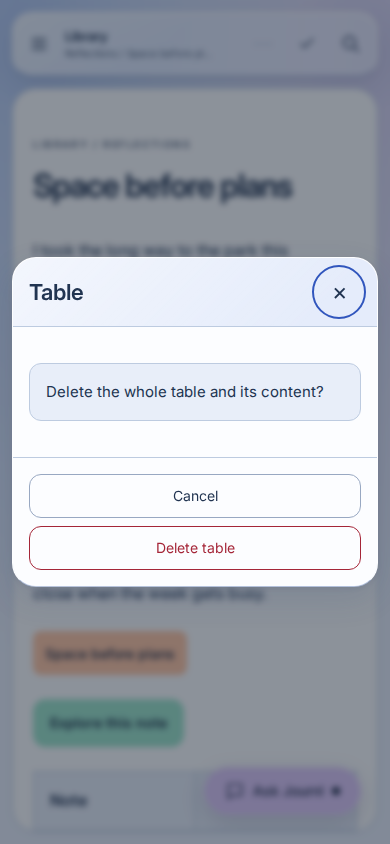
SHA256 025e868136c52af2671d920c8969d6be3262b430609f00f4870dccd2aa123bba

SHA256 35f2bdc4b5dc09f32631d4143389bf3470ea2564949671cafd6afa1071aac4d5
Stored media · safe reading
stored-mediaActions and implementation pointers
+ New page · Journal · Explore · All pages · ⌄ · Reflections · › · Reading · Play video · Play audio · Open stored file · Ask Journl · Today’s Journal · Close · Instant · Thinking
apps/web/src/components/editor/document-toolbar.tsxpackages/better-editor/src/engine/suggestions.tspackages/better-editor/src/ui/context-menu.tsx

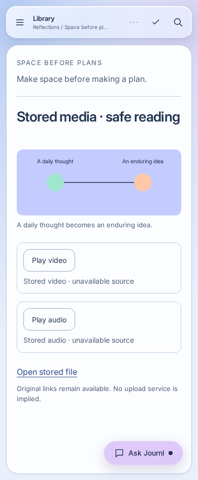
SHA256 02ba20d6ddb56f34f56251f483f7b155fede7af23cfe19d942e4e746fbc52927

SHA256 cafbba3316f4117b36a5e61a5eb057bb91acf22aeea324a5e7a604286ef5849c

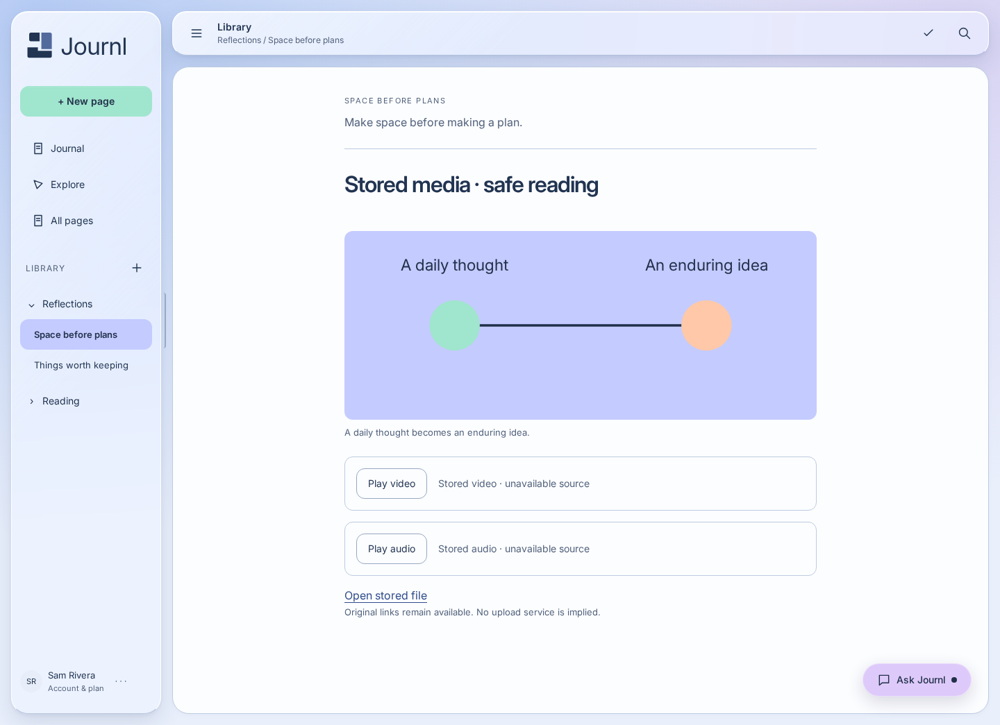
SHA256 92600e9709590492e549841170c5c12fc0b0690ed0189d0ee0f3a0c3bdafebe7

SHA256 d6ec37e1f23a1cfb80186416f282b57924c372358076a04663498aa5bd17fa2c
Read-only content
readonlyActions and implementation pointers
+ New page · Journal · Explore · All pages · ⌄ · Reflections · › · Reading · Ask Journl · Today’s Journal · Close · Instant · Thinking
apps/web/src/components/editor/document-toolbar.tsxpackages/better-editor/src/engine/suggestions.tspackages/better-editor/src/ui/context-menu.tsx

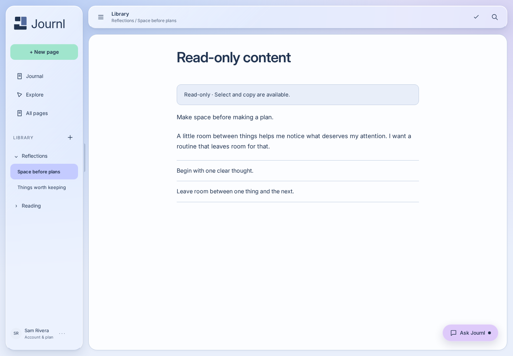
SHA256 b70f08f641329c4456027b87223ed6d3b6d3ff2cd6c5fba6bdcd32e1e7a77337

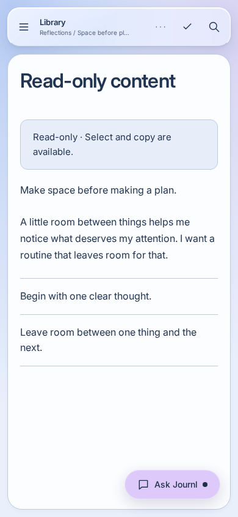
SHA256 20dc2d15641baa9ac3133361137c8b51700087af1847f9ab08a58c569336d535

SHA256 5e06ce83a611a60e70e5ca608beef8cbe3a361030ee3090ab48bda962108000f

SHA256 81d42f8102b1475b850ef3e28c305ccbebd18949eab8e01de7be928ef129ad49
Content cannot be edited safely
unsupportedActions and implementation pointers
+ New page · Journal · Explore · All pages · ⌄ · Reflections · › · Reading · Download full draft · Open recovery · Ask Journl · Today’s Journal · Close · Instant · Thinking
apps/web/src/components/editor/document-toolbar.tsxpackages/better-editor/src/engine/suggestions.tspackages/better-editor/src/ui/context-menu.tsx

SHA256 1ace3b5f2756ac0ad06e8fcf22c01b4b5841365d547506542aa1f04eb9d7ce51

SHA256 4ae478daedddfd12bb1c41f077ed815011753ee2c6ff74d879cff60c5175858f

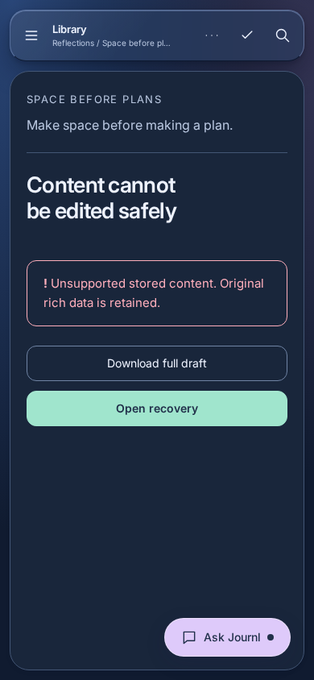
SHA256 4d0141c935b7091b731406fa6678c2b11aa88ecc93a9fbbb6a04ce6d3bbb7a6c

SHA256 adac7dd8611504469a4ea7c128fb7d4ed8a73c498f49cab65c33af5ac0b1e1f1
Stored image · full frame
stored-image-frameActions and implementation pointers
+ New page · Journal · Explore · All pages · ⌄ · Reflections · › · Reading · Ask Journl · Today’s Journal · Close · Instant · Thinking
packages/better-editor/src/engine/schema.ts

SHA256 bb1e7c9b6c38546b5ee29fe74e73581018c76a2013c37e123f300b1b63562a72

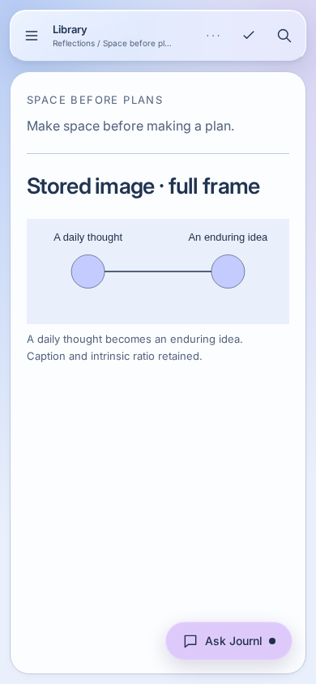
SHA256 0dea3dcefe806e592405ff21d8c285ba1ba1ee5debec5fae06bd28b2f56ee524

SHA256 9a951a384f483e467226b86a9cecc74edb9163f817928434150dfbc67018aebd

SHA256 5b7fae500474d1e28f0856be82ee79cfaa030dc080a06b62270574f35fe0c35f